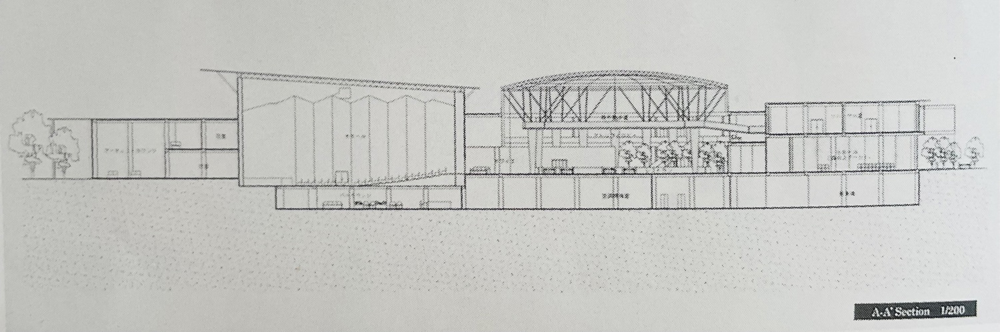
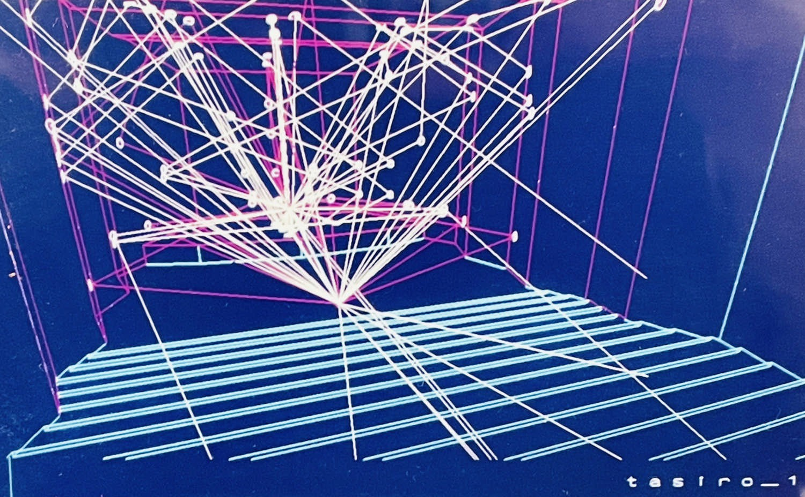

灯 / akari
建築を学び、音と空間に向き合う設計の仕事をしていました。
卒業設計は優秀作品集に。
今は、自然の中で暮らし、音楽を愛し、時々旅をしています。
ここ、ホームページは、旅の「空気」を風が運ぶ羽根のように届けたくてつくりました。
私にとって、ネットの森に置いた小さな家なのです。
その森の家で、風や光、心の動きを大切にしながら、旅を物語のように綴っています。
ようこそ、私のホームページへ。
あなたにも、ふあ…ふわり…
旅の羽根が届きますように。


卒業設計 『深呼吸 Concert Hall as a Forest』 より